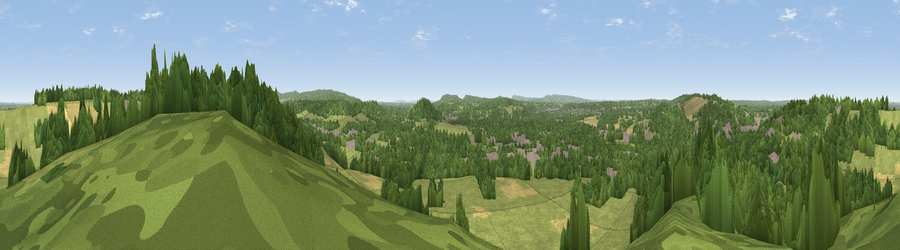

Viewpoint near Shalford
#18508 in England · top 12% of its area beats it · near ShalfordThe view, rendered

A 360° render of this exact spot computed from the terrain model, tree cover and land cover — summer colours, afternoon light, calibrated against photographs of famous viewpoints. Real trees, hedges and buildings will differ in detail.
The panorama
Grey silhouette: terrain skyline in each direction (720 bearings, Earth curvature and refraction included). Dashed green: skyline with trees (+15 m) and buildings (+8 m) as obstacles. Blue strip: how far the ground is visible on each bearing.
Where the view opens
Wedge length = distance to the farthest visible ground on that bearing (vegetation-aware). Rings at 10, 25 and 50 km.
What fills the view
46% woodland · 41% grassland · 9% cropland · 4% built-up
Angular shares of the visible panorama (visual magnitude), not map area. Landscape diversity 0.47 (0–1 Shannon).
Key numbers
More beautiful places nearby
The staircase of upgrades: each row has a higher view potential than everything closer. Driving times are estimates from straight-line distance, calibrated against real road routing — check an actual route before setting out.
| Place | Direction | Drive | Score |
|---|---|---|---|
| St Martha's Hill | E · 2 km | ~5 min | 59.5 |
| Viewpoint near Guildford | W · 3 km | ~8 min | 65.4 |
| Viewpoint near Compton | W · 5 km | ~11 min | 66.7 |
| Viewpoint near Hascombe | S · 9 km | ~18 min | 69.5 |
| Viewpoint near Hascombe | S · 10 km | ~19 min | 70.1 |
| Viewpoint near Coldharbour | ESE · 14 km | ~25 min | 71.3 |
| Viewpoint near Fernhurst | SSW · 21 km | ~35 min | 75.1 |
| Barlavington Down | S · 33 km | ~51 min | 77.3 |
51.22342, -0.55685 · source: screening · position refined by local search. Computed location — check access rights before visiting.